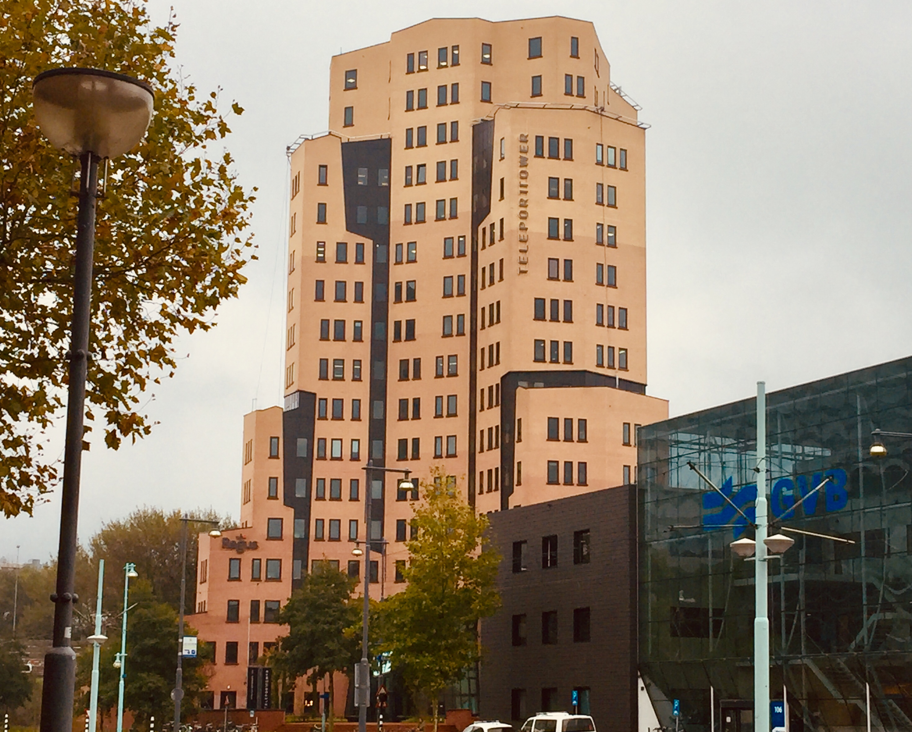
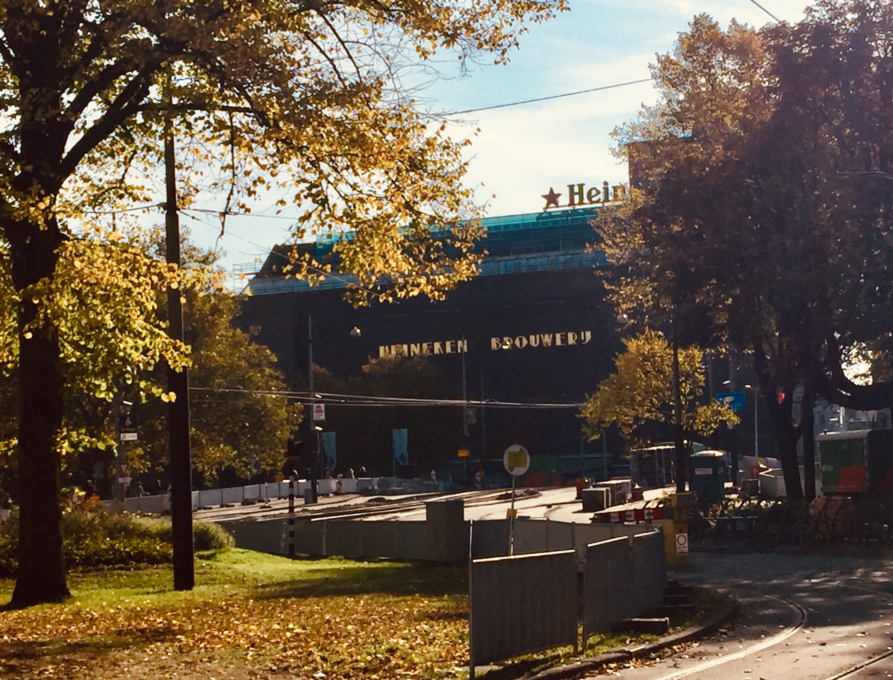

Architour
Time 1 hour and 30 minutes
Distance 6,2 km

Teleporttower
The teleport neigborhood was build in 1984 as a buzinesspark. In 2000 the teleport tower was build. It was build by Imca Vastgoed and architectural firm read more
De Boomkerk
The 'boomkerk' actually called the Rooms-katholieke kerk van Sint-Franciscus van Assisi. The church and rectory were designed by P.J. bekkers. read more

Westerkerk
The church is build between 1620 and 1631 in the renaissance style after the designs of Hendrick de Keyser. It was finished under supervision of his son, Pieter read more

Rijksmuseum
The Rijksmuseum is since 1885 settled in the museum building. This building is designed by Pierre Cuypers. On july 12th 1876 the premition to read more

Heineken Experience
This is established in the old brewery of Heineken. The architect was I. Gosschalk In 1867 the read more
